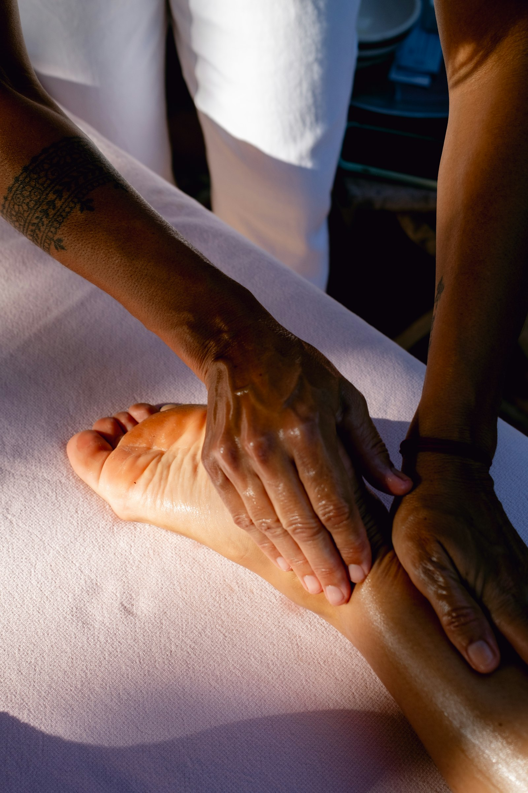
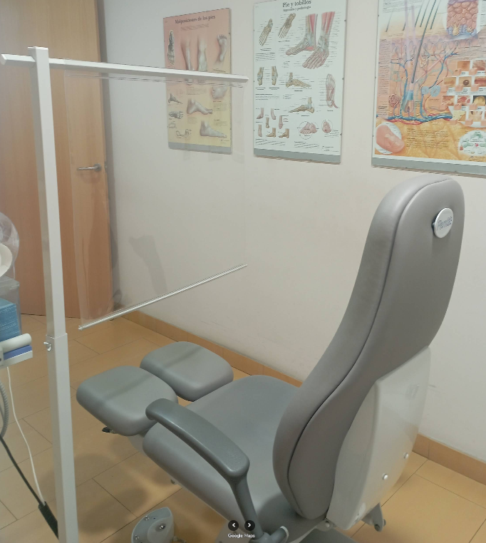
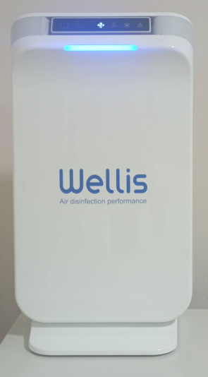

Quiropodia
Tratamiento de durezas, callos, helomas y uñas. El cuidado básico para mantener tus pies sanos.
Centro Podológico · Barcelona
Cuidamos la salud de tus pies con un trato cercano y profesional. Desde una quiropodia hasta plantillas a medida, en pleno barrio de Sants.

Olga Cardona
Podóloga colegiada
Servicios
Tratamientos podológicos para todas las edades, con valoración personalizada en cada visita.
Tratamiento de durezas, callos, helomas y uñas. El cuidado básico para mantener tus pies sanos.
Solución a la onicocriptosis con técnicas conservadoras o cirugía mínima para acabar con el dolor.
Análisis biomecánico para detectar el origen de molestias en pies, rodillas o espalda.
Ortesis personalizadas que corrigen la pisada y reparten las presiones para que camines cómodo.
Revisión y cuidado especializado para prevenir complicaciones y mantener tus pies protegidos.
Seguimiento del desarrollo del pie en los más pequeños para corregir a tiempo y crecer con buen pie.
El centro
En el Centre Podològic Olga Cardona cuidamos la salud de tus pies con rigor profesional y un trato cercano. Te explicamos siempre qué te pasa y cómo lo vamos a tratar.
Estamos en Rambla de Badal, en el barrio de Sants, con todo lo necesario para que tus pies vuelvan a estar como nuevos.
Colegiada
Profesional
Todas
Las edades
Sants
Barcelona


Aire purificado
Sistema Wellis de desinfección del aire para tu seguridad.
Contacto y cita
Llámanos y te damos hora. Atendemos con cita previa en el barrio de Sants.
Teléfono
934 21 24 96Dirección
Rambla de Badal, 45
Entresuelo 3ª, escalera derecha · Sants-Montjuïc, 08014 Barcelona
Horario
Con cita previa
Llámanos y te damos hora.